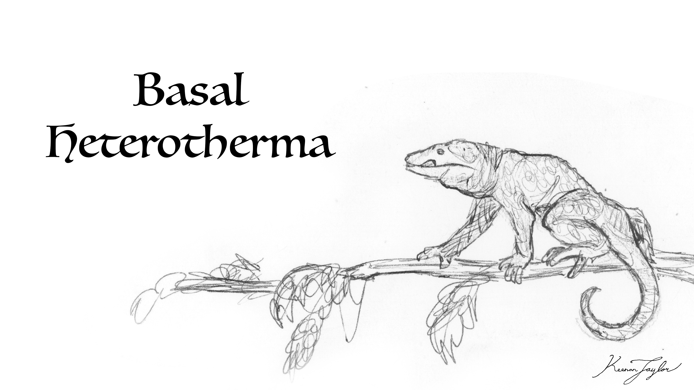
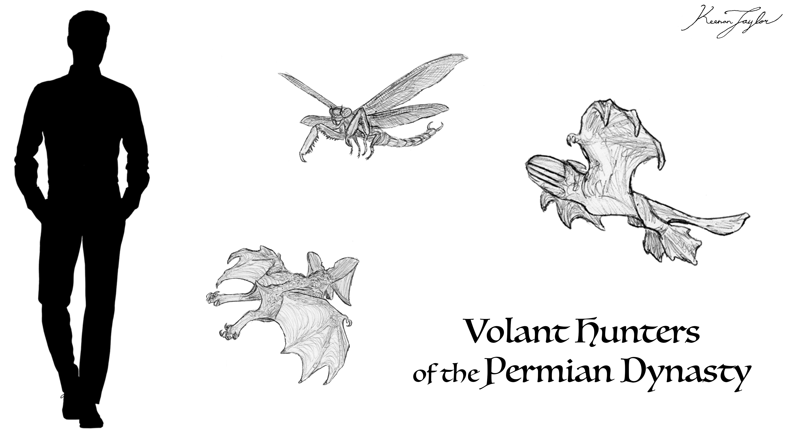
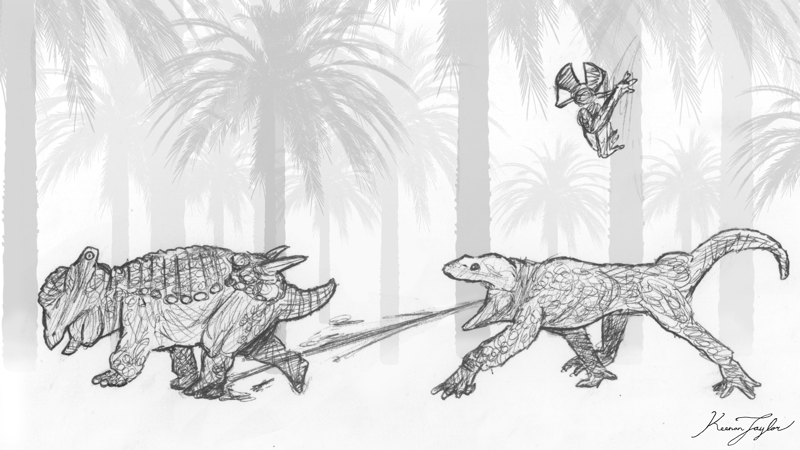
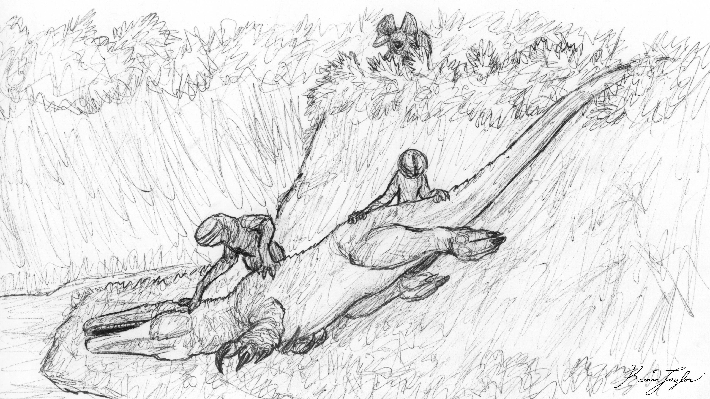
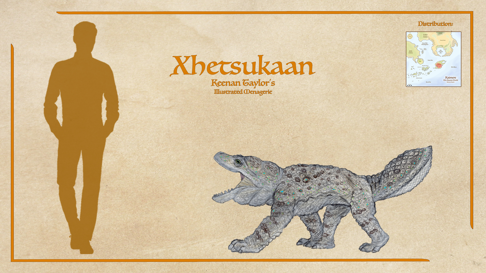
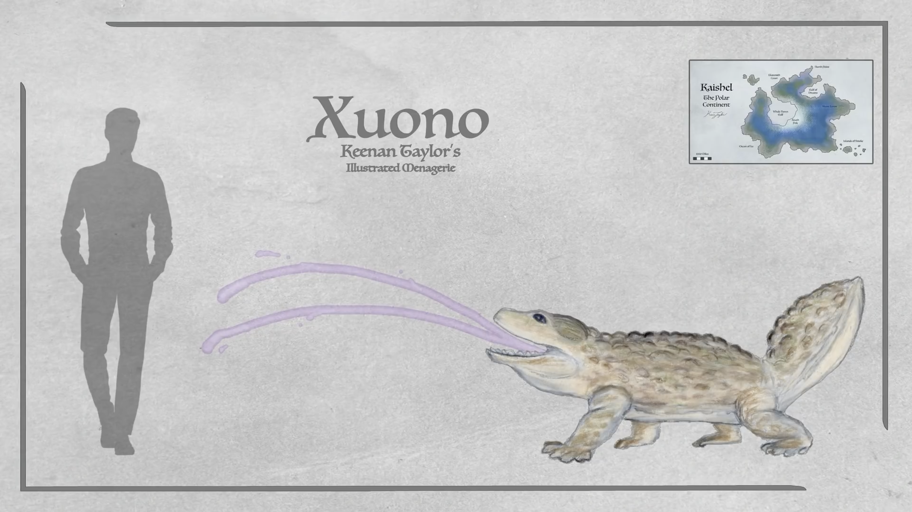
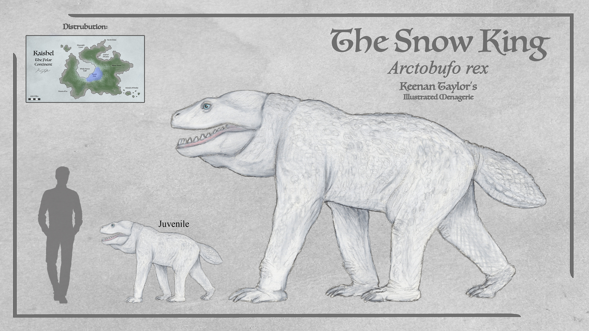
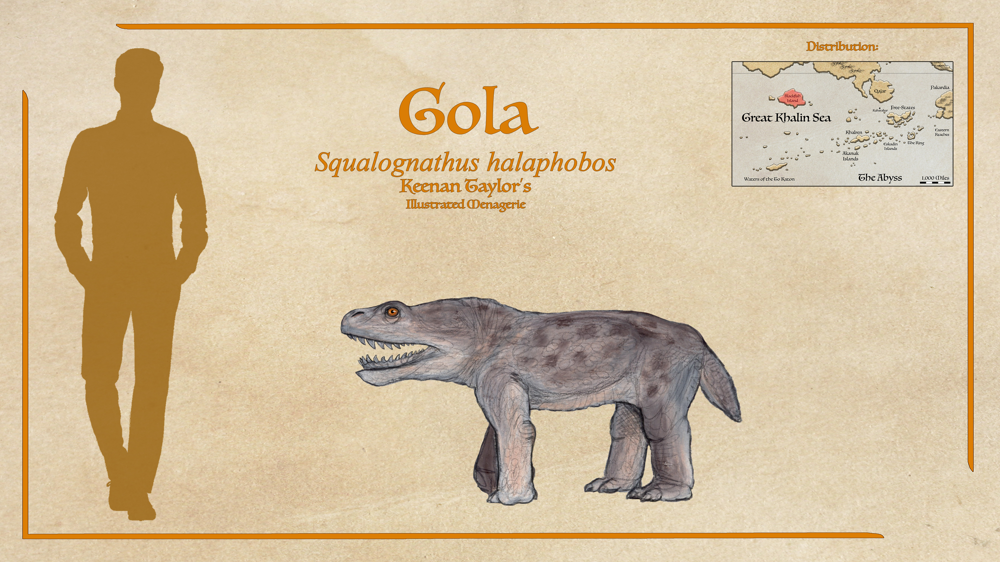
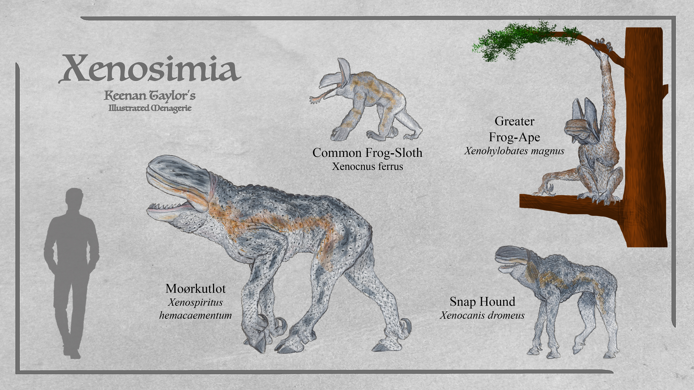
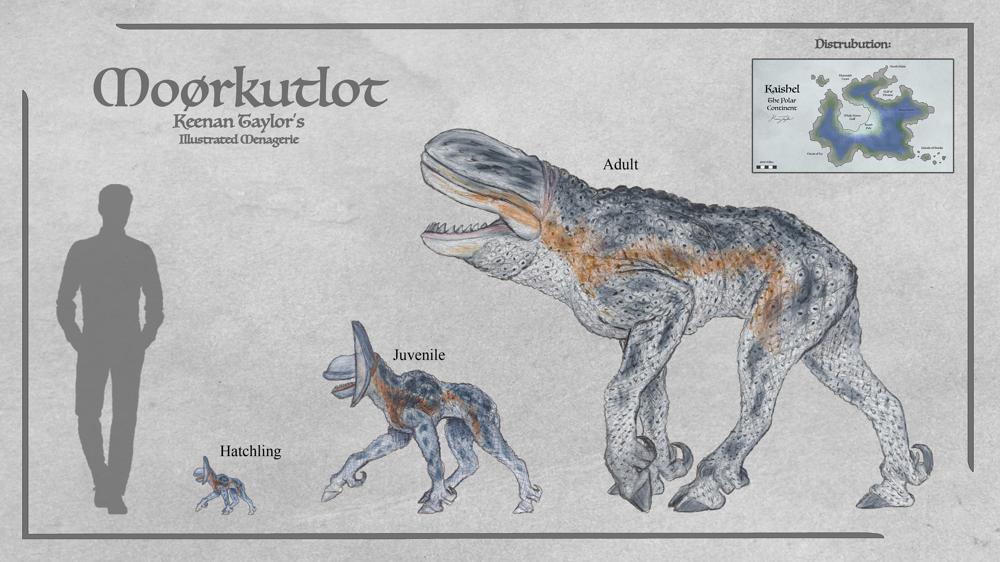

Scientific Classification
| Kingdom | Animalia | Animalia | Animalia |
|---|---|---|---|
| Phylum | Chordata | Animalia | Animalia |
| Superclass | Mammalia | Animalia | Animalia |
| Infraclass | Tetrapoda | Animalia | Animalia |
| Clade | Heterotorosteonia | Animalia | Animalia |
| Class | Heterothermia | Animalia | Animalia |
| Family | Felidae | Animalia | Animalia |
Taxonomic note: The heterotherms are a major lineage of endemic Kaimeran tetrapods whose surviving representatives are placed within the order Heterothermia. The Assembly traditionally treats Heterothermia as an order, although the taxonomic rank applied to the major First Dynasty endemic lineages is acknowledged to be somewhat artificial. The Assembly's use of Linnaean categories for these animals reflects historical classification practices rather than a strict representation of evolutionary distance. Consequently, the apparent taxonomic separation between the heterotherms and other endemic Kaimeran tetrapods can exaggerate the distinction between groups that were considerably closer to one another during the First Dynasty.
01 · INTRODUCTION
Overview

Heterothermia, commonly referred to as the heterotherms, is an endemic order of Kaimeran tetrapods whose members are distinguished by an unusual form of metabolic regulation that allows them to alternate between periods of intense activity and prolonged metabolic suppression. The lineage originated during the First Dynasty and represents one of the oldest surviving radiations of complex terrestrial animals on Kaimere.
The defining characteristic of heterotherms is their ability to shift between an energetically expensive, highly active state comparable to endothermy and an extremely reduced metabolic state known as torpor or stasis. Rather than maintaining a consistently high metabolic rate, heterotherms adjust their physiology according to the availability of food. When prey is abundant, they can become highly active, sustaining rapid movement and prolonged activity. When resources become scarce, their metabolism can be reduced dramatically, allowing them to survive periods of famine that would be fatal to most similarly sized predators.
This unusual strategy allowed heterotherms to repeatedly survive major environmental changes. Although their ancestors originated as small arboreal generalists, the lineage subsequently produced terrestrial ambush predators, cursorial hunters, arboreal predators, and several independently volant forms. Their ecological diversity is particularly notable because many of these forms retain the same fundamental metabolic strategy despite occupying radically different environments.
Two major living and extinct radiations dominate the order: Pituitveria and Xenosimia. Pituitverians are primarily characterized by their adhesive venom and the use of specialized non-Newtonian slime for prey capture, whereas xenosimians are distinguished by their blindness, extraordinary auditory specialization, echolocation, and, in several lineages, highly developed cursorial or aerial adaptations.
Another characteristic shared broadly across Heterothermia is the production of a non-Newtonian mucus. The material becomes increasingly resistant to deformation when subjected to greater force. This probably originated as a defensive adaptation in the arboreal ancestors of the order, where falling was a significant hazard. A layer of the material covering the body could absorb impacts, while its increasing resistance under sudden force could provide protection against predators. It subsequently became incorporated into prey capture and defense in numerous descendant lineages.
The mucus also imposed an important ecological constraint. Salt rapidly degrades the secretion, making most heterotherms highly sensitive to saline environments. This has historically restricted many species from coastlines, salt flats, and other highly saline habitats. Several lineages have independently evolved modifications that reduce this limitation, however, allowing certain species to occupy environments that would otherwise be inaccessible to the order.
02 · DEEP TIME
Evolutionary History
Origins in the First Dynasty

The ancestry of Heterothermia can be traced to the First Dynasty, when Kaimere was dominated by warm, humid forests and wetlands. The earliest heterotherms were apparently small arboreal generalists inhabiting the vegetation of this newly established terrestrial ecosystem. Their precise ancestry remains uncertain, but the source material identifies them as probably descending from an ancestral whatcheeriid-like tetrapod.
The early heterotherms were not initially large predators. Instead, they occupied the small-bodied terrestrial and arboreal niches available within the forests. Their success appears to have been driven by a combination of behavioral and physiological adaptations. Their ability to enter torpor allowed them to survive periods when prey became temporarily scarce, while their active metabolism permitted them to exploit periods of abundance much more aggressively than conventional low-metabolism predators.
The origin of their characteristic mucus appears to have occurred relatively early in their history. For an arboreal animal, a material that hardened under sudden impact would have been particularly advantageous. Falling from trees was an unavoidable danger, and the mucus could provide a degree of protection when an animal struck a branch or the ground. The same substance subsequently became useful as armor against predators and eventually as a weapon.
During the later First Dynasty, heterotherms diversified into two major evolutionary trajectories. The lineage that became Pituitveria retained a relatively generalized tetrapod body plan and increasingly incorporated the adhesive mucus into prey capture. Xenosimia, meanwhile, became specialized for nocturnal predation and gradually developed an increasingly sophisticated auditory sensory system.

The early xenosimian lineage was arboreal and apparently capable of gliding in several branches. Later xenosimians would evolve powered flight independently in at least two lineages, making Heterothermia one of the few Kaimerean tetrapod groups to repeatedly evolve aerial locomotion.
The End of the First Dynasty

The First Dynasty ended approximately 255 million years ago following profound climatic and environmental disruption. Continental movement altered atmospheric circulation and weakened the conditions that had maintained Kaimere's global hothouse, while an impact event compounded the environmental crisis.
The resulting extinction devastated many of Kaimere's endemic terrestrial lineages. Heterotherms nevertheless survived, particularly on the southern supercontinent that would later become Arvel and Kaishel respectively. Their ability to tolerate periods of reduced food availability was likely important to their persistence during this transition.
The aftermath of the extinction also created an important ecological distinction between the two principal heterotherm radiations. Pituitverians became increasingly terrestrial, eventually developing into major predators, while xenosimians remained predominantly arboreal and nocturnal.
The Permian Dynasty

The beginning of the Permian Dynasty brought successive harvests of Late Permian Earth organisms to Kaimere. These introductions radically altered the competitive environment. The tropical portions of the planet became increasingly dominated by newly introduced Permian fauna, while several endemic Kaimeran lineages were pushed toward ecological margins.
Heterotherms were an important exception. They continued to thrive on the southern supercontinent, where they occupied ecological roles left available by the extinction of earlier predators. Pituitverians became particularly successful. Their adhesive venom provided an effective means of subduing the large herbivores that dominated the terrestrial ecosystem. Rather than pursuing prey over long distances, they could immobilize animals using their adhesive secretion and then approach once the prey had become incapable of effective resistance.
The evolution of the pituitverian hunting strategy demonstrates an important consequence of heterothermic metabolism. Because the animals did not need to maintain a continuously high metabolic rate, they could afford to spend enormous amounts of time inactive before engaging in relatively brief periods of intense predatory activity.
Xenosimians followed a different evolutionary trajectory. Their nocturnal habits, sensory specialization, and tolerance for relatively cool environments allowed them to exploit conditions that were increasingly unsuitable for many tropical predators. Their basic body plan included blindness, elongated limbs, a compact torso, specialized auditory structures, and a highly extensible tongue. These characteristics were already recognizable in xenosimians by the end of the First Dynasty.
Mesozoic Expansion
The arrival of new dinosaurs and other terrestrial fauna during the Mesozoic placed increasing pressure on the endemic tetrapods of the southern continent. Heterotherms survived these faunal transitions but gradually lost their former dominance.
During the major biotic interchange associated with the Age of Tremor and Travel, northern and southern faunas came into increasing contact. Dinosaurs such as parasauropods and coelophosaurs expanded into regions previously dominated by endemic Kaimeran tetrapods.

Heterotherms were initially among the dominant predators of the southern continents, but the expansion of dinosaurian predators displaced them from many apex positions. They persisted primarily as mesopredators, particularly beneath the expanding coelophosaurs. Additionally the large continent splintered at this period of time, with a chunk moving easterward and eventually becoming Arvel.
This was nevertheless not a complete evolutionary retreat. The flexibility of their metabolic system allowed heterotherms to survive in environments where more energetically demanding predators could not easily persist. Their lineage continued to diversify even while losing ecological dominance.
The Radiation of Xenosimia

One of the most significant later developments in heterotherm evolution occurred on Pakardia. When the Pakardio-Khalin plate separated from Kaishel approximately 40 million years ago, it carried with it an isolated assemblage of endemic fauna.
The disappearance of the largest native predators created an ecological vacuum. Xenosimians rapidly expanded into it. A lineage that had once consisted primarily of arboreal, nocturnal hunters underwent a major adaptive radiation, producing both arboreal and cursorial forms. Among the most successful descendants was Xenospiritus, which became the dominant predator across much of the continental interior.
This radiation demonstrated how rapidly the xenosimian body plan could be reorganized while retaining its fundamental sensory and metabolic characteristics. Some descendants became specialized tree predators, others became ground hunters, and still others developed larger bodies and increasingly powerful jaws.
Modern Heterotherms
Modern Heterothermia remains particularly diverse in Kaishel, where the lineage has persisted through repeated climatic and ecological changes. The order contains predators ranging from relatively small arboreal species to the enormous snow king, Arctobufo rex, regarded as the largest known heterotherm. The two major surviving radiations illustrate the divergent evolutionary strategies available within the order.
Pituitveria represents the more conservative lineage. Its members retain much of the generalized body plan of their ancient ancestors but have become overwhelmingly terrestrial. Two major subfamilies are recognized, Emeosaurinae and Squalognathinae. Emeosaurines retain the ancestral ability to project adhesive venomous slime, whereas squalognathines have evolved a massive, deep-bodied build and internalized their slime-producing tissues beneath the skin. This allows them to survive in saline environments that would destroy the exposed mucus of other heterotherms.
Xenosimia, in contrast, represents a more radically specialized radiation. Its members are entirely blind, retaining only vestigial eyes beneath the skin. They compensate with an exceptionally sophisticated auditory system and echolocation. Their skull incorporates a large resonating structure analogous in function to the melon of toothed whales, accompanied by specialized auditory shields that improve sound reception. Their tongues have also become important sensory and feeding structures.
Modern xenosimians range from slow-moving arboreal predators such as frog-sloths and frog-apes to cursorial predators such as snap hounds and the much larger moørkutlot.
03 · SPECIES ACCOUNTS
Known Diversity
The following accounts document representative felids recorded in the encyclopedia. Select a species to consult its individual natural history and descriptive account.
Xhetsuktaan

Scientific placement to be confirmed
At first glance, the xhetsuktaan looks a lot like a big dopey salamander with bumpy toad skin. Unfortunately for Pakardiant highlanders, they are deceptively lethal. They hock loogies of adhesive non-newtonian venom. In brief: non-newtonian fluids are liquids that have varying levels of viscosity, in this case becoming solid whenever kinetic energy is applied. This means that once sprayed, if you don't move slow, you don't move at all. Xhetsuktaan aren't fast, but they're faster than a deer locked in place. The slime is also mildly acidic and numbing, so by the time they get to you, you're already in serious trouble. The same properties coat their skin, and highlanders say that arrows from high-poundage bows bounce off their hide. You can only kill them with slow attacks, so be sure to bring a shield and hope this toad who aced physics burns through their supply before engaging or you're going to have plenty of time for your life to flash before your eyes as a non-newtonian newt tucks in for a slow feast.
Read species article →Xuonu

Scientific placement to be confirmed
The xuonu of Kaishel is related to the xhetsukaan a pituitverian, and can also trace its origins to some of the first harvests in the late Devonian, and is one of the last relics of the first pioneers. They may look cute at a distance but are ferocious predators. A heterothermic metabolism allows quick movements and steady endurance when times are good, and they can convert to a full stasis if times are tough. They can run down some prey, but mostly they are ambush hunters, waiting under brush and trapping prey in viscous adhesive slime stored in their tails. A smaller cousin is found on Pakardia, but they are quite rare, as many were hunted and harvested by the First Children for their slime, prized for its numbing effects and high tensile strength.
Read species article →Snow King

Arctobufo rex
The interior of Kaishel around the poles is a vast desert dotted with glaciers. As it was once part of Whale Haven Bay, much of this salt flat and therefore inhospitable to The Silent Ones. It is here that a large pituitverian, the snow king is the top predator and largest known heterotherm. Their slime is under a layer of tough skin, giving them the impact benefits without deteriorating from both the salt flats and from saline onshore winds. They also do not spit slime, though their bite has the same venom. They can kill with brute force, but often prefer to bite and retreat, letting the prey succumb to toxins, shock, and blood loss. Most of their prey are migrating megafauna heading to the seasonally-abundant gulf-coast forests, then back to the warmer continental shores further north during winter. Arctobufo often only makes two kills a year: one on their way to the gulf coast and once back, and much of their lives beyond that is spent in stasis. This lifestyle, of bulk feeding twice a year and enduring the rest, is a gift of their strange metabolism.
Read species article →Gola

Squalognathus halaphobos
Perhaps the strangest of Hyote's apex predators is the gola. These nocturnal heterotherms are said to run up to prey, bite hard, and go limp. They have the teeth of a shark, and can slice deep wounds that bleed more as prey struggles. According to the Ehyoke, after they eat so much their belly almost bursts, they go hide and won't come out for many days. They are not common, yet no matter how many are killed, it seems their numbers replenish. They cannot be killed with arrows unless they are bathed in salt water and let dry. The Hyote wear salt to repel the gola, as they fear it. Though their description does not seem to be an especially close relative of the moørkutlot of Kaishel, most notably the giant red eyes that Wind-Kisser describe and are corroborated by the specimen Felicity was shown, they appear to have similar vulnerabilities. As they won't go near the coast due to their alleged saline sensitivity, they have not been observed, but a specimen was brought to Agathognosis by Eskadin smugglers seeking great reward, and it does appear to be genuine, so at least the skeleton is fairly well understood. Felicity said they had smooth skin, so they are likely not covered in quilted warts like moørkutlot, but perhaps it had something to do with its particular stage of decomposition, so the depiction here may not be entirely accurate.
Read species article →Xenosimians

Xenosimians are an ancient clade of Heterotherms most notable by their lack of eyes for which they derive their alien reputation. In modern times, this clade is quite abundant and diverse in Kaishel. There are many species of 'frog-sloth' and 'frog-ape' in the trees. Both are ambush predators that hunt in the trees quietly to avoid attracting their larger cousins attention, though frog-apes are significantly more active. These both enter stasis in lean times, but they aren't as specialized for it as their more derived cursorial kin. The snap hounds have several species with the largest being a social predator Xenocanis dromeus. This genus is more derived than the moørkutlot, with reduced toes and greater intelligence ,while very much in the shadow of their larger cousins. Assembly naturalists suspects of this more intelligent and social predator seems a good chance of inheriting the niche so did anything happen. To the Silent Ones, as the genus Xenospiritus has survived largely unchanged since taking over from a relative after the Dynastic Extinction. It is assumed that significant contextual change will have to occur to give Xenocanis this opportunity but if the opportunity comes these small and more intelligent predators are poised for a takeover for centuries.
Read Greater Frog-Ape article → Read Common Frog-Sloth article → Read Snap Hound article →Moørkutlot

Xenospiritus hemacaementum
The moørkutlot is the apex predator of the Silent Forests of Kaishel, they are the largest member of their order at around 1.8 meters at the shoulder, 2 — 2.5 meters from snout to hindquarters, and range from 270 — 450 kilograms. Despite living among animals at or far above the moørkutlot's size class, this animal and it's relatives have driven the entire continent of Kaishel into silence through a set of bizarre but highly successful adaptations which some believe are so effective that they are an unnatural being created by the First Children. The skin of moørkutlot is a mottled gray with noticeable countershading, at the midline is a copper colored stripe which curves and fades down towards the knee. the body of moørkutlot is almost skeletal, however they possess long, robust limbs ideal for climbing and chasing, the head is comparitively large and melon shaped, often compared to that of a shark, further supported by backward facing blade-like teeth. Their jaws have been compared to sharks like the great white and tiger, and for good reason. Their bite is astonishingly powerful, their teeth readily shed and are continuously sharp and serrated. And their jaws strike a surprising balance of flexibility and power. When hunting small prey they simply use their tongue for capture and swallow. but against large game these flexible and slicing jaws are perfect for rapid bulk feeding. Silent Ones is a typical translations of these alleged Demons of cold and quiet. Though many naturalists consider it misleading the moørkutlot is not a particularly quiet animal. Their echolocation is often compared to the crackling of fire and they make all sorts of grunts, snorts, and hissing vocalizations. They are social animals and without eyes they interact with the world through sound. They aren't silent, but their presence and predation has meant that Kaishel is a quiet world.
Read species article →04 · CLASSIFICATION
Taxonomic Notes
Heterothermia is traditionally recognized by the Assembly as an order of endemic Kaimeran tetrapods or KET's. Its placement within the broader classification of Kaimeran life remains somewhat problematic because the major endemic groups that arose during the First Dynasty are often treated at artificially high Linnaean ranks. Assembly paleontologists historically recognized as many as six independent endemic "classes" originating during the First Dynasty, although these ranks are largely a historical convention rather than an indication that the lineages are equivalent to the biological classes recognized on Earth.
The heterotherms are thought to descend from an ancestral whatcheeriid-like tetrapod introduced during the earliest harvests. Their subsequent evolution on Kaimere produced a lineage sufficiently distinct from their terrestrial ancestors that the Assembly treats Heterothermia as a separate endemic order.
Two principal evolutionary divisions are recognized within the living and recently extinct heterotherms: Pituitveria and Xenosimia. These lineages diverged early in the history of the group and pursued substantially different ecological strategies.
The Pituitverians retained the ancestral emphasis on adhesive slime and became primarily terrestrial predators. Their living representatives include the families Emeosauridae and Arctobufidae. Emeosaurids generally retain the ancestral ability to project adhesive venom from a pair of ducts within their mouths, whereas arctobufids evolved a different method in which the venom is delivered through the bite.
The Xenosimians form the other major radiation. They are distinguished by their complete loss of functional eyes, reliance on echolocation, and highly specialized auditory systems. The group contains both arboreal and terrestrial predators and historically included volant forms. Modern xenosimians include frog-sloths, frog-apes, snap hounds, and the large Silent Ones of Kaishel.
The classification of extinct First Dynasty heterotherms is less certain. Because the early members of the order were much more generalized than their modern descendants, determining which ancient forms represent direct ancestors of particular modern branches is difficult. Some apparent differences between fossil populations may represent ecological variation rather than deep taxonomic divisions.